Managing Domains¶
Alation Cloud Service Applies to Alation Cloud Service instances of Alation
Customer Managed Applies to customer-managed instances of Alation
Available from release 2021.1
Note
The steps mentioned in this document can be performed only by Catalog or Server Admins.
Create a New Domain¶
To add a new Domain,
Go to Apps > Domains.
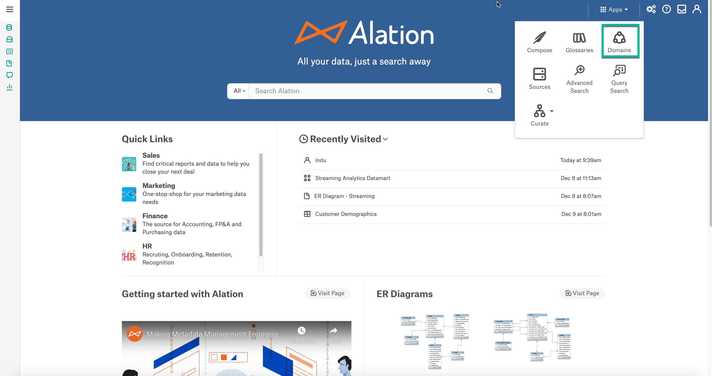
Click on Create Domain to create a new Domain.
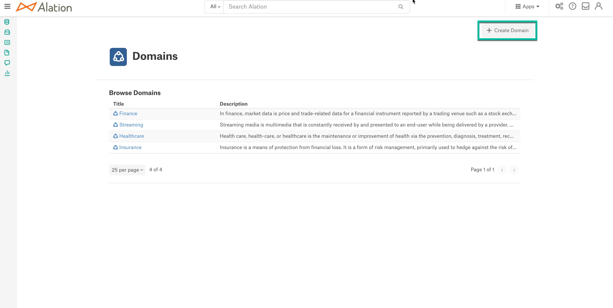
Provide the Title of the new Domain. Once satisfied with the title press RETURN/ENTER or click outside of the input to save it.
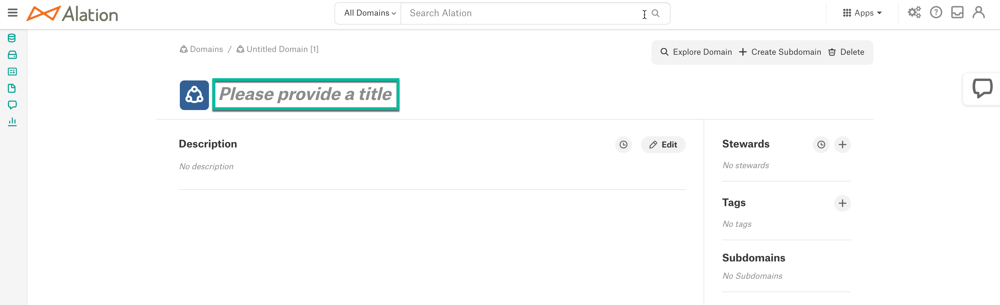Note
Avoid clicking ‘Create Subdomain’ as it will create new nested Domain instead of saving the current title.
Click the Edit button to provide the description of the Domain.
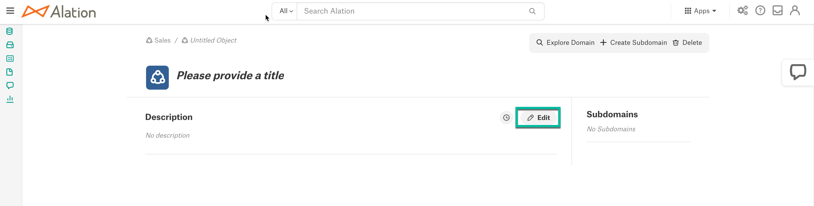
Create a New Subdomain¶
From a Domain catalog page perform the following steps to create a new Subdomain,
Click on the Create Subdomain button.
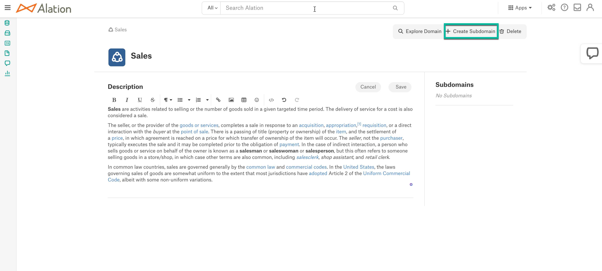
Provide the Title of the new Subdomain. Click the Edit button to provide the description of the Subdomain.
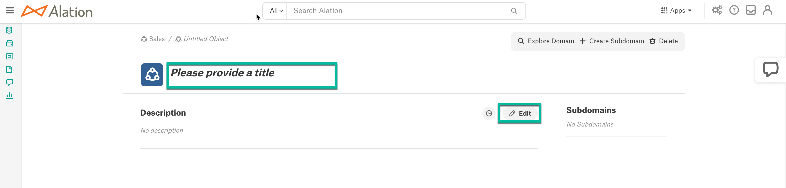
Add Objects to Domain/Subdomain¶
To add any supported Data Object to a Domain/Subdomain, go to the Object page or use Domain Search to find the relevant object for the Domain/Subdomain:
First check to see if the Object is already a member of the desired Domain. Is the specific Domain already listed under the Domains section? If it isn’t, it may be indirectly referenced with a subdomain. Hover over each listed Domain and observe the individual domain breadcrumbs. Is the Domain listed as an ancestor? If so, the object is already a member of that Domain and there is no need to add it again. If not, continue on with the subsequent steps.
On the Object page, click the + icon on the Domains Menu.
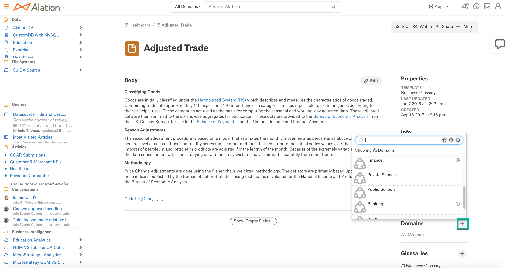
It displays a list of Domains and Subdomains. Select any Domain/Subdomain to add the Object to the applicable Domain/Subdomain.
Note
The listing does not specify any difference between the Domains and Subdomains.
Click the Confirm button on the modal window. If the Object has children, they will be automatically added to the Domain. This process of resolving children will take some time so don’t worry if they aren’t updated right away.
For example, if you add any data source to a Domain the schemas, tables and columns associated with the data source will automatically be added to the Domain.
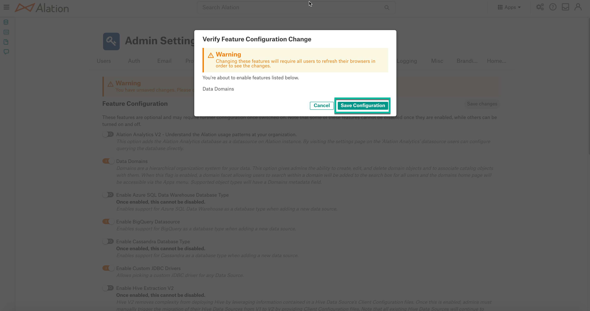Note
The added objects can be viewed only in the Domains search screen.
Objects are included into Domains and Subdomains according to the following rules:
Domains/Subdomains can have any number of objects mapped under them.
An object can be added to any number Domain/Subdomains.
An object that has parent objects can be added to a Domain independently from its parent objects.
When a parent object is added to a Domain its child objects are recursively added to this Domain. A child object can be excluded from a Domain if necessary.
From 2021.4:
When adding an object to a Domain, users can choose to add this object and all its child objects or add a single object only (shallow add), without adding the child objects.
Choose Add this object and all of its current and future children to this domain to add the parent and the child objects to the Domain. If any new child object is added to this parent later will also be added to the Domain.
Note
Objects with many child objects will take some time for the change to be reflected on all child object pages and in search.
Choose Add only this object to the domain to add only the selected parent object.
{kind=link}
Explore Domains¶
Explore Domains lets users search for the objects within domains. Click the Explore Domain button to perform the search.
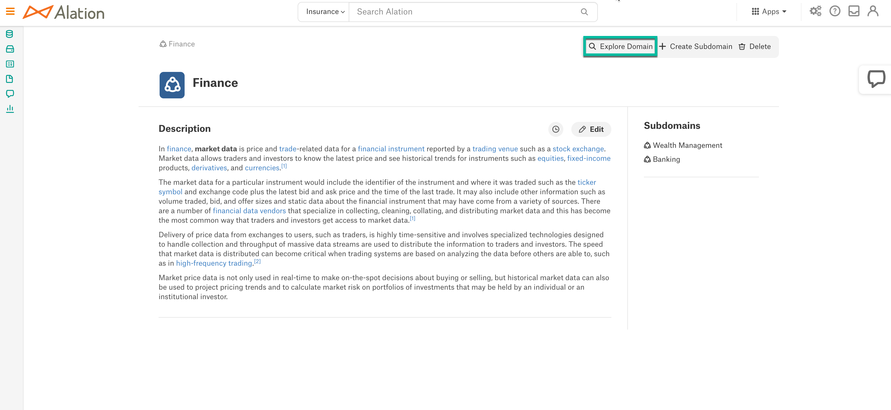
Users can expand the search to other domains as well by selecting the domains from the drop list.
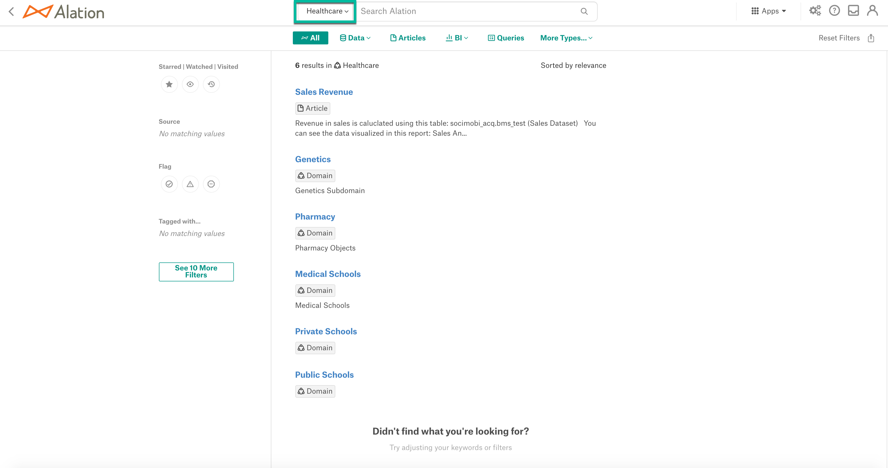
Delete Domains/Subdomains¶
On the Domain/Subdomain page, click Delete to delete the Domain/Subdomain. The delete action deletes all the Domain/Subdomain and unassign all the object mappings from the Domain/Subdomain.
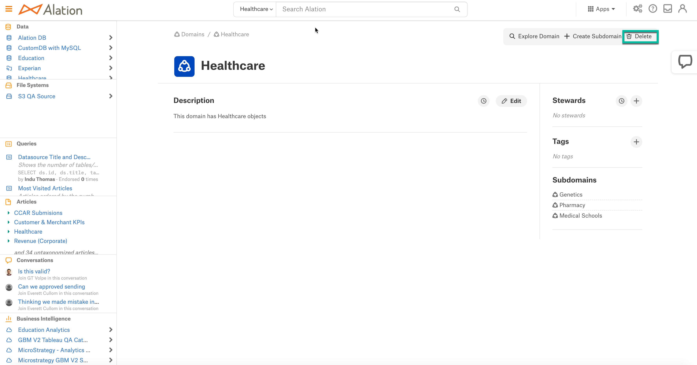Note
After deleting. It will take some time to reflect the change in the object catalog pages.
If a Domain has multiple levels of Subdomains and many objects mapped within Subdomains, Alation recommends to delete the inner levels of subdomains first, working your way out to the targeted domain. Pausing between domains is useful to ensure time for search indexing updates. Failure to do this may result in other low priority search updates taking even longer to be reflected in search results.
Customizing Domains Page¶
Alation enables the Server Admins and Catalog Admins to customize the Domains page to facilitate better curation. Go to Settings > Catalog Admin > Customize Catalog > Custom Templates > Domain.
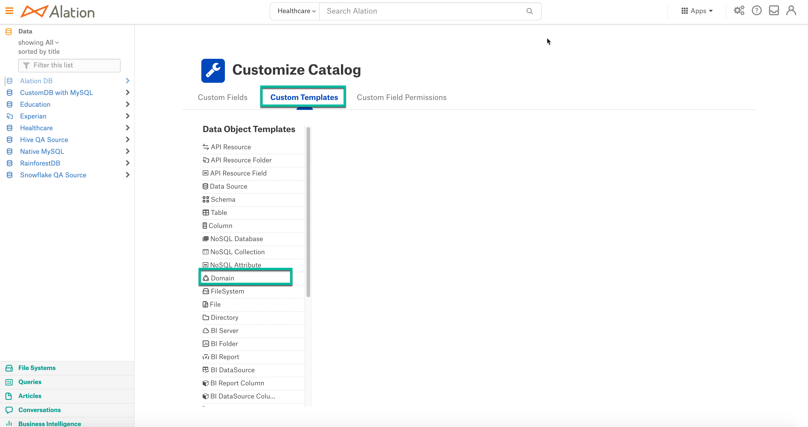To customize, refer to Customize your Data Catalog.
Materialization¶
Alation is set to perform periodical metadata extraction which adds or deletes the objects, however, those updates are not reflected in Domains immediately. Materialization helps to keep the Domains updated by doing the weekly job runs to pick up these changes.
We suggest running the weekly materialization job as it will resolve new child objects and reflect them in domains.
The domains_materialize_domains enabled once to run at 4 Am every Sunday. This can be rescheduled in the crontab syntax:
alation.domains.materialize_all_domains_job.schedule.day -s 0
alation.domains.materialize_all_domains_job.schedule.hour -s 0
alation.domains.materialize_all_domains_job.schedule.minute -s 0
Once you reschedule, restart the celery beat:
alation_supervisor restart celery:celery-beat
The run time of the domains_materialize_domain depends on the complexity of the Domains and the size of its members. If Domains are large (say >1M members) materialization may take a long time to finish. For instance, we expect roughly 5M members to take 24 hours on a m4.2xlarge host. The output of this job run is available in the celery-domains_error.log file.
Enable Materialize All Domains Job¶
Log in to the Alation server instance.
Enable feature flag using the alation_conf command:
alation_conf alation.domains.materialize_all_domains_job.enable -s True
Restart the celery.
alation_supervisor restart celery:*